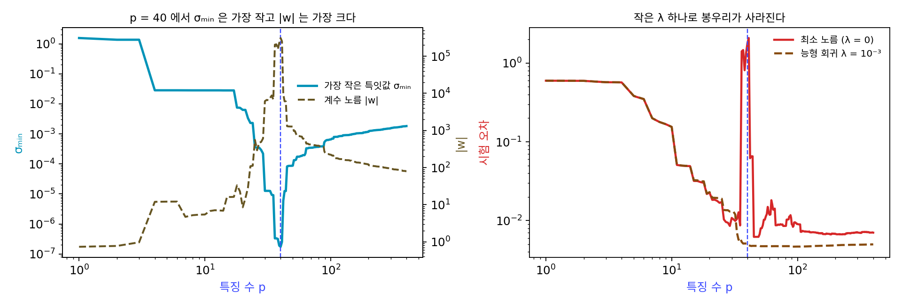
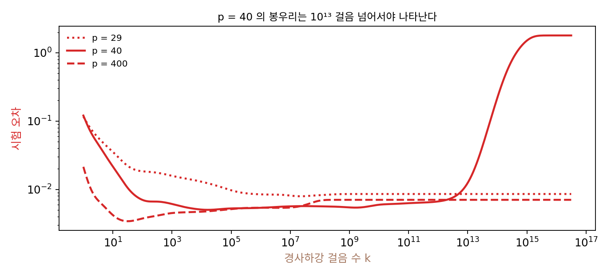
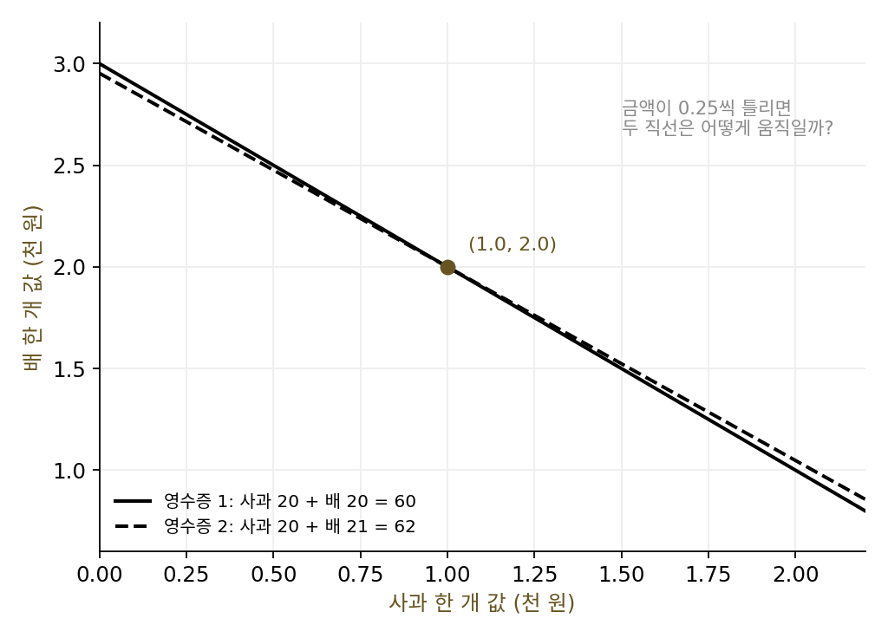
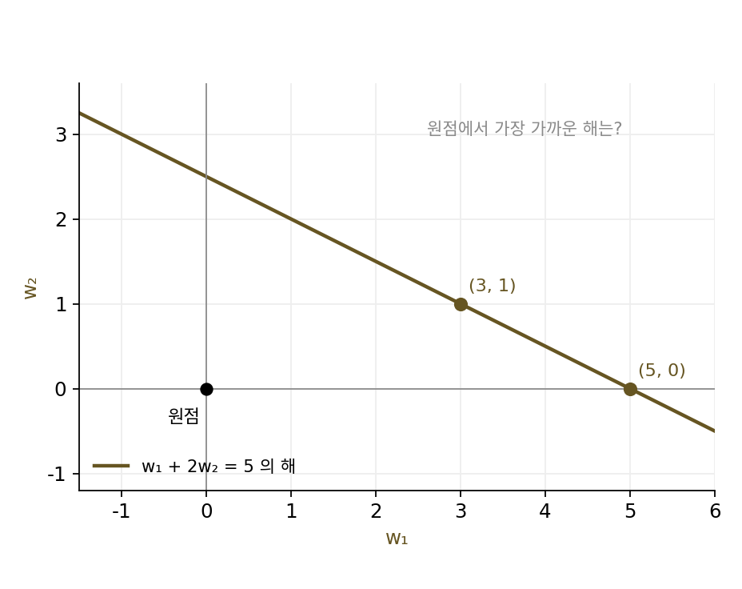
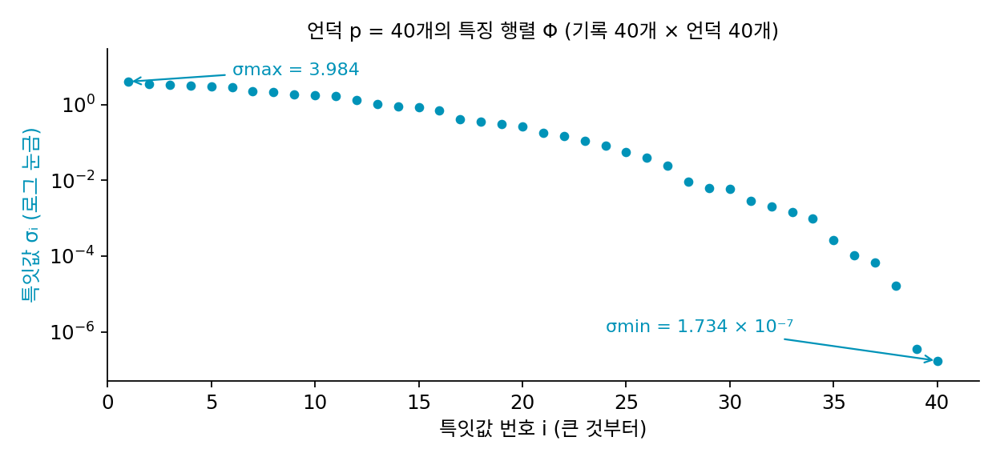
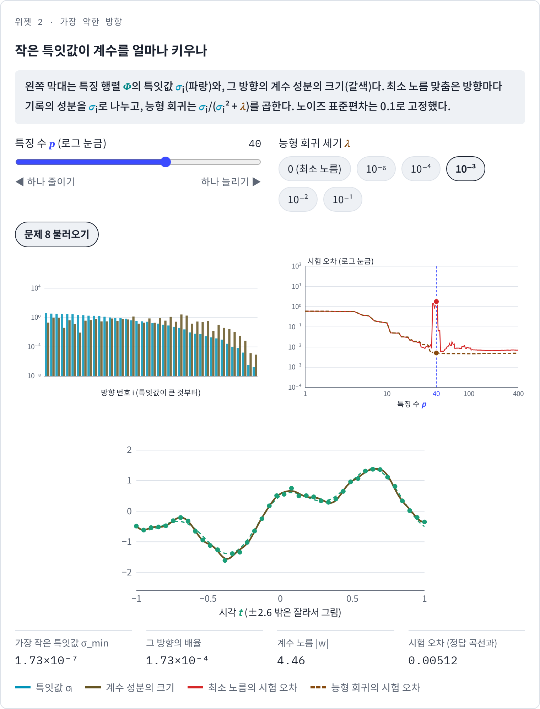

보간 문턱: 가장 작은 특잇값이 노이즈를 키운다
이중 하강의 봉우리는 언덕 수가 기록 수 40에 닿는 언저리에 섰고, 노이즈가 클수록 높았다. 언덕을 40개 쓸 때 계수 노름은 309,671이었고, 400개 쓸 때는 79였다. 둘 다 기록을 다 지나는데 왜 문턱에서만 계수가 이렇게 커질까? 그리고 「점을 다 지나는 방법이 하나뿐이면 사납다」는 말은 정말 문턱에서만 성립할까?
비슷한 영수증 두 장
먼저 미지수 둘, 방정식 둘인 가장 작은 경우에서 문제가 어디서 오는지 보자. 과일 가게에서 사과 20개와 배 20개를 사고 60천 원, 사과 20개와 배 21개를 사고 62천 원을 냈다. 두 영수증을 연립하면 사과 한 개 1.0천 원, 배 한 개 2.0천 원이다. 그런데 영수증의 금액이 반올림 등으로 조금씩 틀려 있다고 해 보자. 두 금액이 같은 쪽으로 0.25씩 많으면(60.25, 62.25) 답은 사과 1.0125, 배 2.0으로 원래 답과 거의 같다. 한 장은 0.25 많고 다른 한 장은 0.25 적으면(60.25, 61.75) 답은 사과 1.5125, 배 1.5로 크게 바뀐다. 금액 오차의 길이는 두 경우 모두 0.354인데 값 오차의 길이는 0.0125와 0.716으로 57배 차이가 난다.
왜 이렇게 다를까? 두 영수증이 거의 같은 내용이어서, 「두 금액이 함께 늘었다」는 오차는 사과와 배 모두 조금씩 비싸다고 보면 설명된다. 그러나 「두 금액이 엇갈렸다」는 오차를 설명하려면 배 한 개 차이만으로 0.5천 원 차이를 만들어야 하므로 값을 크게 비틀어야 한다. 행렬로 쓰면 [[20, 20], [20, 21]]의 특잇값이 40.51과 0.494로, 한 방향은 크게 늘이고 다른 방향은 거의 납작하게 누른다.
특잇값 분해로 본 최소 노름 해
이 구조를 특잇값 분해로 적어 보자. 특잇값 분해는 행렬을 「돌리기, 축마다 σ배로 늘이기, 다시 돌리기」로 쪼개는 것이었다. 언덕 맞추기에서 특징 행렬 Φ(대문자 파이, phi)는 40행 p열이고(Φ의 (i, j) 칸은 i번째 기록 시각에서 j번째 언덕의 높이 φⱼ(tᵢ)), 기록에 맞춘다는 것은 Φw ≈ y를 푸는 일이다. Φ를 특잇값 분해하면 최소 노름 최소제곱 해는 방향마다 따로 풀린다.
둘째 식이 이 절의 핵심이다. 기록 y를 방향 uᵢ로 잰 성분을 그 방향의 특잇값 σᵢ로 나눈 만큼 계수가 그 방향 vᵢ로 움직인다. 기록에 섞인 노이즈도 이 나눗셈을 똑같이 거치므로, 노이즈가 계수로 옮겨 갈 때 가장 크게 부풀려지는 배율은 1/σmin이다. 기록에서 계수로 가는 이 사상의 립시츠 상수가 1/σmin이라고 해도 같은 말이다. 영수증 행렬에서 1/0.494 = 2.03이 엇갈린 금액 오차를 키운 배율이었다. σmin이 0에 가까우면 이 배율은 끝없이 커진다. p가 40보다 작을 때도 같은 식으로 풀리는데, 그때 uᵢ는 p개뿐이라 y에서 그 p개 방향 밖에 있는 성분은 맞추지 않고 잔차로 남겨 둔다.
가장 작은 특잇값은 문턱에서 가장 작다
그러면 σmin이 언덕 수에 따라 어떻게 바뀌는지가 관건이다. 계산해 보면 p = 30에서 1.26 × 10⁻⁵, 38에서 3.18 × 10⁻⁷, 40에서 1.73 × 10⁻⁷로 가장 작고, 41에서 2.52 × 10⁻⁷, 45에서 8.21 × 10⁻⁵, 400에서 1.82 × 10⁻³으로 다시 커진다. 1부터 400까지 모두 재 보면 p ≤ 40에서는 언덕을 하나 더할 때마다 줄기만 하고, p ≥ 40에서는 늘기만 한다.
가장 작은 특잇값이 문턱에서 가장 작다는 것은 언덕 맞추기만의 우연이 아니라, 두 가지 사실만으로 따라 나온다. 하나, 세로가 긴 행렬(p < 40)의 σmin은 길이 1인 계수 w 가운데 |Φw|가 가장 작은 값이다. 언덕을 하나 더하면 새 언덕의 높이를 0으로 둔 옛 계수도 여전히 후보이므로, 가장 작은 값은 더 작아질 수는 있어도 커질 수는 없다. 둘, 가로가 긴 행렬(p > 40)의 σmin은 길이 1인 기록 쪽 벡터 z 가운데 |Φᵀz|가 가장 작은 값이다. 언덕을 하나 더하면 Φᵀz에 칸이 하나 붙을 뿐이라 길이는 줄 수 없다. 두 사실을 합치면 σmin은 정사각형이 되는 p = 40에서 가장 작고, 봉우리가 기록 수 언저리에 서는 것도 구조로 보면 이 때문이다.
문턱에서 실제로 무슨 일이 생기는지 방향별로 보자. p = 40의 가장 약한 방향은 σ = 1.73 × 10⁻⁷이고, 기록을 그 방향으로 잰 성분은 −0.0500이고, 그 가운데 정답 곡선에서 온 부분이 −0.0084, 노이즈에서 온 부분이 −0.0416이다. 나누면 계수 성분이 −2.88 × 10⁵인데, 노이즈에서 온 부분이 절반을 훌쩍 넘는 작은 수를 아주 작은 수로 나눈 결과다. p = 400의 가장 약한 방향은 σ = 1.82 × 10⁻³이라 같은 나눗셈을 해도 −78이다.
그런데 p = 30에서도 σmin은 10⁻⁵로 작았는데 시험 오차는 0.0108로 괜찮았다. 무엇이 다를까? 가장 약한 방향 vmin으로 계수를 바꿀 때 곡선이 얼마나 움직이는지를 기록 시각과 그 사이에서 따로 재 보면 답이 보인다. p = 30에서는 기록 시각에서 2.0 × 10⁻⁶, 시험 시각 801개에서 1.4 × 10⁻⁵로 비가 6.9이고, p = 400에서는 비가 2.0이다. p = 40에서는 2.7 × 10⁻⁸과 2.6 × 10⁻⁶으로 비가 94다. 문턱의 가장 약한 방향은 기록 시각에서만 조용하고 그 사이에서는 크게 움직이는 방향이다. 이 방향에 부풀린 노이즈가 실리니, 기록은 다 지나면서 점 사이에서 곡선이 튄다.

언덕 수가 기록 수와 같아져 모든 점을 지나는 해가 처음으로 생기는 자리를 보간 문턱 (점을 다 지나는 해가 처음 생기는 크기 / interpolation threshold)이라 한다. 보간 문턱에서 특징 행렬의 가장 작은 특잇값이 가장 작아지고, 노이즈가 그 역수만큼 부풀려져 계수와 시험 오차를 키운다.
능형 회귀는 나눗셈의 상한을 둔다
봉우리를 없애는 방법도 최소 노름 해의 식 w = Σ (uᵢ·y/σᵢ)vᵢ에서 나온다. 계수 노름의 제곱에 페널티 λ|w|²을 더해 맞추는 능형 회귀는 방향마다 1/σᵢ 대신 σᵢ/(σᵢ² + λ)를 곱한다. 이 배율은 σᵢ가 크면 1/σᵢ와 거의 같지만, σᵢ가 0에 가까워지면 끝없이 커지는 대신 σᵢ/λ로 작아진다. λ = 10⁻³으로만 잡아도 p = 40의 시험 오차는 1.7932에서 0.0051로 떨어지고, 언덕 수 20 이상에서 곡선의 가장 큰 값이 0.0230으로 봉우리가 사라진다. p = 400에서도 0.0070이 0.0050이 된다.
ML에서: 학습 시간이 모델의 크기를 정한다
신경망은 최소 노름 해를 식으로 풀지 않고 경사하강으로 다가간다. 언덕 맞추기를 0에서 출발한 경사하강(학습률 1/σmax²)으로 풀면, 스텝마다 방향 vᵢ의 성분이 최소 노름 해 쪽으로 (1 − σᵢ²/σmax²)배씩 남은 거리를 줄인다. 특잇값이 큰 방향은 몇 스텝에 끝나고, 작은 방향은 대략 (σmax/σᵢ)² 스텝이 걸린다. p = 40이면 가장 약한 방향의 (σmax/σmin)²이 5.3 × 10¹⁴이다. 그래서 1만 스텝 학습한 p = 40의 시험 오차는 0.0051로 능형 회귀와 같고, 10¹²스텝에서도 0.0067이다. 10¹³스텝에서 0.0125, 10¹⁴스텝에서 0.2183으로 오르기 시작해 10¹⁶스텝에서야 최소 노름 해의 1.7932에 닿는다. 스텝 수가 모자란 경사하강은 약한 방향을 아직 맞추지 못한 맞춤이고, 그 모습이 작은 λ의 능형 회귀와 닮았다.

나키란 팀이 학습 에포크를 따라서도 이중 하강을 본 것은 이 때문이다. 학습을 오래 할수록 모델이 실제로 맞출 수 있는 방향이 늘어나므로, 학습 시간이 모델의 「쓰는 크기」를 키운다. 그들은 이것을 「실질 모델 복잡도」라 부르고, 실질 모델 복잡도가 학습 데이터 수에 닿는 곳에서 봉우리가 선다고 추측했다. 조기 종료가 정규화처럼 듣는 것도, 나키란과 동료들의 2020년 논문 「최적의 정규화는 이중 하강을 누그러뜨릴 수 있다(Optimal Regularization Can Mitigate Double Descent)」가 보인 결과도 같은 식에서 나온다. 그들은 입력이 모든 방향으로 고르게 퍼진 몇몇 선형 회귀에서 세기를 잘 고른 능형 회귀 페널티가 봉우리를 없앤다고 증명하고, 신경망에서도 봉우리를 누그러뜨리는 것을 실험으로 보였다.
문제 6. 영수증의 약한 방향
비슷한 영수증 두 장(사과 20 + 배 20 = 60, 사과 20 + 배 21 = 62)의 행렬 [[20, 20], [20, 21]]은 특잇값이 40.51과 0.494이고, 약한 방향은 금액 쪽 u = (−0.716, 0.698), 값 쪽 v = (−0.716, 0.698)이다. (가) 금액 오차 (0.25, −0.25)는 어느 방향에 가까운가? 그 오차가 값 오차를 몇 배로 키울지 대략 구하라. (나) 사과 30 + 배 10 = 50인 셋째 영수증(금액은 정확)을 더해 최소제곱으로 풀면 답과 가장 작은 특잇값은 어떻게 되는가? (다) 미지수보다 영수증이 많아지면 왜 나아지는가?


(가)는 오차 길이 0.354가 0.716으로 커졌으니까 두 배쯤이에요. 그런데 왜 두 배인지는 모르겠어요. 첫째 영수증이 틀린 건 0.25뿐인데요.

오차 (0.25, −0.25)를 약한 방향 u와 비교해 보세요. 길이를 1로 맞추면요?

(0.707, −0.707)이니까 u와 부호만 반대고 거의 같아요. 오차가 전부 약한 방향에 실린 거네요.
약한 방향에 실린 오차는 몇 배로 커지죠?
1/0.494 = 2.03배니까 0.354 × 2.03 = 0.716. 맞아요.

그럼 두 금액이 함께 0.25씩 틀렸을 때 0.0125였던 건, 강한 방향이라 1/40.51배로 줄어서였구나.
(나)는 셋째 영수증을 넣고 최소제곱으로 풀면 사과 1.0008, 배 1.9988이야. 가장 작은 특잇값이 0.494에서 11.75로 커졌어. 사과와 배의 비율이 전혀 다른 영수증이라서 약한 방향을 받쳐 주는 거야.

그럼 미지수 둘에 영수증 둘이 가장 위험한 자리일까요? 영수증이 하나뿐이면요?
영수증이 하나면 값을 정할 수 없어요. 사과와 배 값이 무수히 많아져요.
둘과 셋은요?

둘이면 하나로 정해지지만 그 하나가 약한 방향에 휘둘리고, 셋이면 남는 영수증으로 오차를 나눠 받아요. 그럼… 딱 맞게 정해지는 둘이 오히려 제일 약하네요.
언덕 맞추기에서 기록 40개에 언덕 40개가 봉우리였던 거랑 같은 꼴이네.

미지수와 식의 수가 같을 때 해가 처음으로 딱 하나 생기는데, 그 해가 가장 약한 거야.

비슷한 실험을 두 번만 해서 기울기를 정하면 안 되는 이유네요. 물리 실험 보고서에서 거의 같은 조건의 측정 두 개로 직선을 그었다가 기울기가 엉터리로 나온 적이 있어요.
문제 7. 방정식 하나에 미지수 둘
(가) 방정식 w₁ + 2w₂ = 5의 해 가운데 노름 √(w₁² + w₂²)이 가장 작은 것을 구하라. (5, 0), (3, 1)의 노름과 비교하라. (나) 미지수를 하나 더해 w₁ + 2w₂ + 2w₃ = 5로 만들면 최소 노름은 어떻게 되는가? (다) 언덕 맞추기에서 문턱을 넘어 언덕을 늘릴수록 계수 노름이 줄어든 것과 무슨 관계인가?

(가)는 직선 w₁ + 2w₂ = 5 위에서 원점에 가장 가까운 점이니까 원점에서 직선에 내린 수선의 발이야. 계수 벡터 (1, 2) 방향이어야 하니까 (1, 2)에 5/5를 곱한 (1, 2), 노름은 √5 = 2.236. (5, 0)은 5, (3, 1)은 3.162라 다 더 커.
특잇값 식으로 해도 같아요. 행렬이 1행이니까 u = 1, σ = |(1, 2)| = √5, v = (1, 2)/√5. w = (5/√5)v = (1, 2).
(나)는요? 미지수를 하나 더하면 노름이 늘까요, 줄까요?

미지수가 늘면 복잡해지니까 노름도 클 것 같았는데, 계산하니 (0.556, 1.111, 1.111)이고 노름이 1.667이에요. √5 = 2.236보다 작아요.
옛 해 (1, 2)에 0을 붙인 (1, 2, 0)도 새 방정식의 해인가요?
네, 1 + 4 + 0 = 5니까요. 그럼 옛 해가 모두 새 해 후보에 들어가니까… 최소 노름은 늘 수가 없어요.
늘 수 없다는 건 알겠어요. 그런데 왜 줄기까지 했을까요?
새 미지수도 합 5의 일부를 맡으니까요. 나눠 맡으면 값들이 작아져서 노름이 줄어요.
(다)는요?
그래서 문턱을 넘어 언덕을 늘릴수록 최소 노름 해의 노름이 309,671에서 79까지 내려간 거구나.
가장 작은 특잇값이 언덕을 더할수록 커진 것과 같은 이야기를 계수 쪽에서 한 거네.
일을 여러 사람이 나눠서 하면 한 사람이 맡는 분량이 줄어드는 거랑 같네요. 미지수가 사람이고, 맞춰야 할 합 5가 일이에요. 조별 과제에서 혼자 다 떠맡은 사람이 제일 지쳐 보이는 것처럼요.
문제 8. 능형 회귀의 상한과 스텝 수
언덕 수 p = 40의 특징 행렬은 σmax = 3.984, σmin = 1.734 × 10⁻⁷이다. (가) 최소 노름 맞춤에서 가장 약한 방향의 배율 1/σmin은 얼마인가? (나) 능형 회귀 λ = 10⁻³의 배율 σ/(σ² + λ)는 가장 커도 얼마이고, σmin에서는 얼마인가? (다) 학습률 1/σmax²인 경사하강으로 가장 약한 방향을 반쯤 맞추려면 대략 몇 스텝이 필요한가? (풀어 본 뒤 위젯 2의 「문제 8 불러오기」로 확인해 보자.)

(가)는 1/(1.734 × 10⁻⁷) = 5.77 × 10⁶이요. (나)는 σ/(σ² + λ)에서 σ가 작으면 분모가 λ만 남으니까 σ/λ = 1.73 × 10⁻⁴이요. 그런데 가장 큰 값은 σ가 클 때 아닌가요? σ가 크면 분자가 크니까요.
σ가 아주 크면 분모는 어떻게 되죠?
분모가 σ²으로 커지니까 1/σ로 다시 작아져요. 작은 σ에서도 작고 큰 σ에서도 작으면… 가운데 어딘가가 꼭대기네요.
그 꼭대기는 어디죠?
미분하면 σ = √λ에서 1/(2√λ) = 15.81이에요.
그러니까 능형 회귀는 어느 방향도 15.81배 넘게 키우지 못해. 최소 노름은 577만 배까지 키웠는데. 위젯에서 λ를 10⁻³으로 놓으면 갈색 막대의 오른쪽 끝, 약한 방향들이 다 주저앉아.
(다)는요? 경사하강의 한 스텝은 그 방향의 남은 거리를 몇 배로 만들죠?
(1 − σ²/σmax²)배예요. 반이 되려면 (1 − r)ᵏ = 1/2를 풀어야 하는데…
r이 아주 작으면 ln(1 − r)은 무엇에 가깝죠?
−r요. 그럼 k ≈ ln 2 / r = ln 2 × (σmax/σmin)² = 3.66 × 10¹⁴스텝이에요.
본문의 표에서 10¹⁴스텝 언저리부터 시험 오차가 오르기 시작한 것과 맞네.

경사하강이 실제로 그만큼 돌 일은 없으니, 경사하강으로 학습한 모델은 저절로 능형 회귀처럼 구는 거예요.
실전에서 이중 하강이 생각보다 덜 보이는 것도 이 때문이겠네요. 학습을 일찍 멈추거나 가중치 감쇠를 거는 순간 봉우리가 깎이니까요. 시험 전날 밤을 새워도 책 끝까지 못 가면 마지막 장에서 헷갈릴 일도 없는 거랑 비슷해요.
위젯 2에서 문제 8 설정을 불러와, 약한 방향의 계수 성분 막대와 「그 방향의 배율」이 최소 노름일 때와 어떻게 달라지는지 확인해 보세요.
